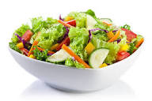
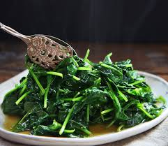

SOME OF MY FAVOURITE FOOD
SALAD
salads have more nutrient content, wonderful colors and fragrances, eating raw vegetables each day can have significant health benefits.
LENTIL SOUP
Soup contains a high quantity of water that nourishes your body cells and keeps your skin fresh.

SPINACH
Spinach is rich in several minerals that your body needs. They helps lower your blood pressure. Spinach protect against age-related eye diseases
